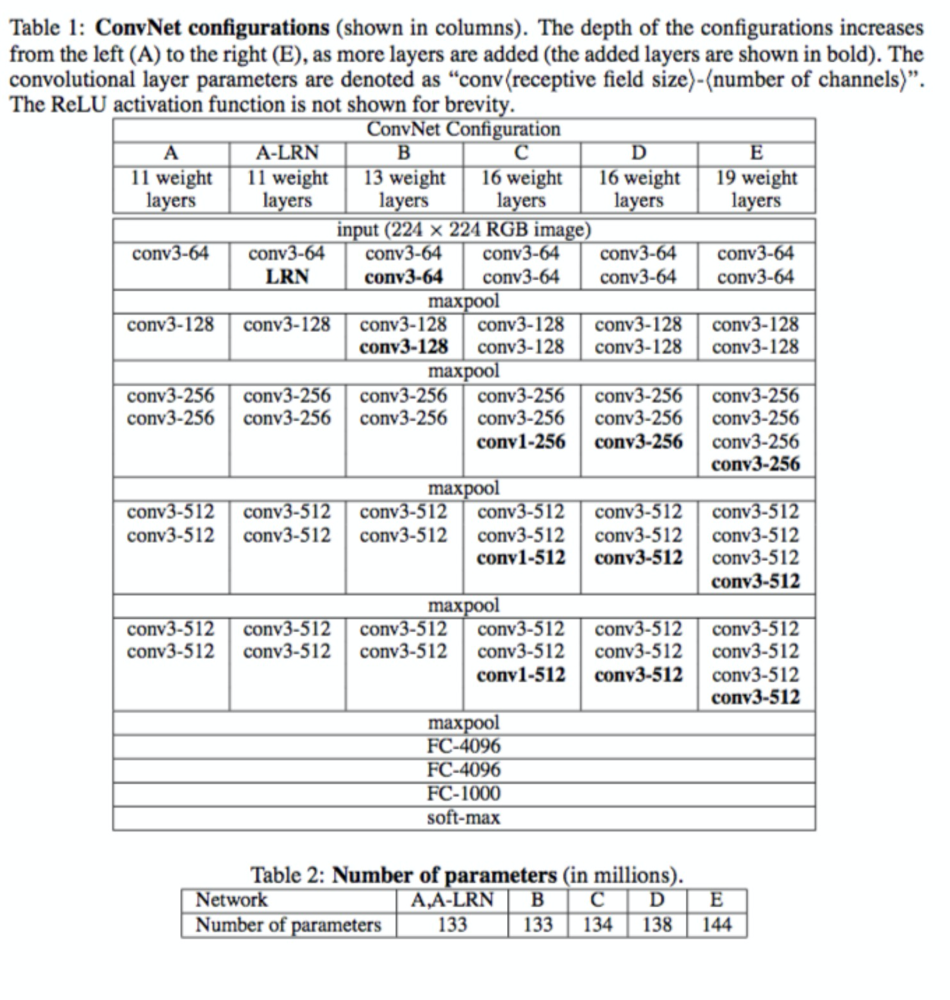
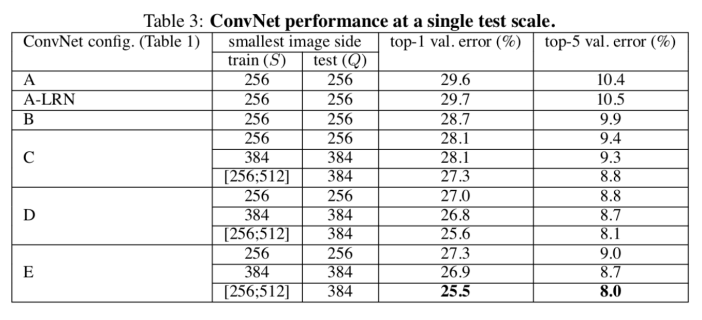
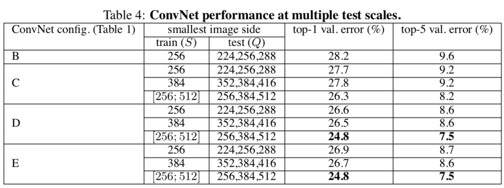
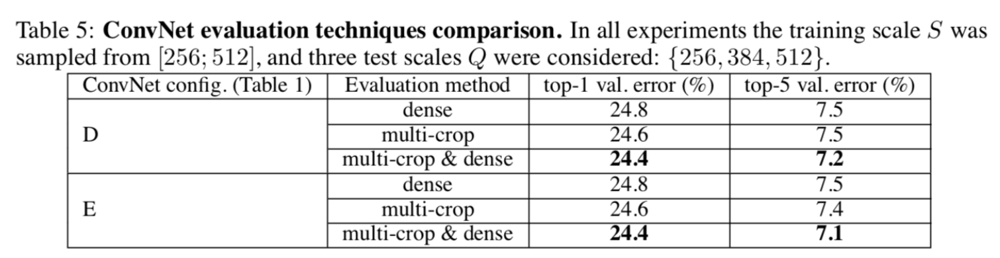
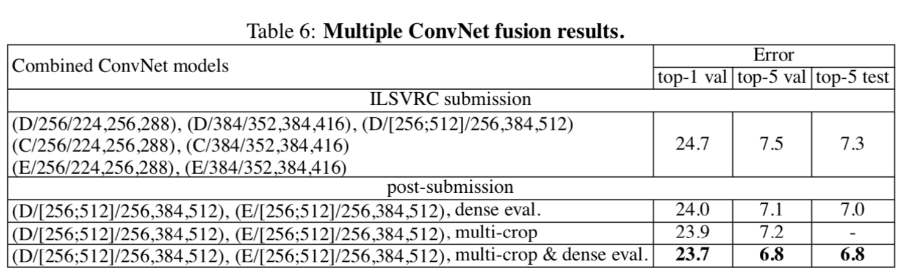
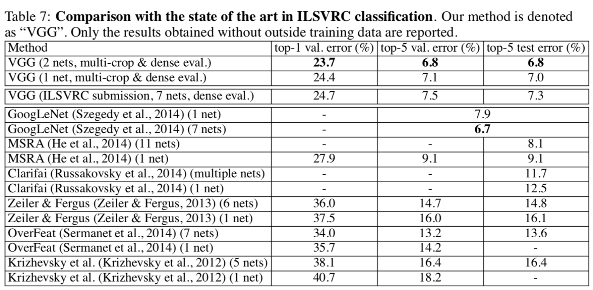

笔记阅读2015年发表于ICLR的《VERY DEEP CONVOLUTIONAL NETWORKS FOR LARGE-SCALE IMAGE RECOGNITION》图像分类部分，课程实践采用的是VGG-16模型。
摘要
论文探讨在大规模数据集情景下，卷积网络深度对其准确率的影响。我们的主要贡献在于利用3*3小卷积核的网络结构对逐渐加深的网络进行全面的评估，结果表明加深网络深度到16至19层可极大超越前人的网络结构。这些成果是基于2014年的ImageNet挑战赛，该模型在定位和分类跟踪比赛中分别取得了第一名和第二名。同时模型在其他数据集上也有较好的泛化性。我们公开了两个表现最好的卷积神经网络模型，以促进计算机视觉领域模型的进一步研究。
1.介绍
卷积网络(ConvNets)成功原因：大型公共图像数据集，如 ImageNet；高性能计算系统，如GPU或大规模分布式集群。
前人的工作：人们尝试在AlexNet的原始框架上做一些改进。比如在第一个卷积上使用较小的卷积核以及较小的滑动步长。另一种方法则是在全图以及多个尺寸上，稠密的训练和测试网络。
而本文主要关注网络的深度。为此，我们固定网络的其他参数，通过增加卷
积层来增加网络深度，这是可行的，因为我们所有层都采用小的3*3卷积核。
2.卷积配置
为凸显深度对模型效果的影响，我们所有卷积采用相同配置。本章先介绍卷积网络的通用架构，再描述其评估中的具体细节，最后讨论我们的设计选择以及前人网络的比较。
2.1架构
训练输入：固定尺寸224224的RGB图像。
预处理：每个像素值减去训练集上的RGB均值。
卷积核：一系列33卷积核堆叠，步长为1，采用padding保持卷积后图像空间分辨率不变。
空间池化：紧随卷积“堆”的最大池化，为2*2滑动窗口，步长为2。
全连接层：特征提取完成后，接三个全连接层，前两个为4096通道，第三个为1000通道，最后是一个soft-max层，输出概率。
所有隐藏层都用非线性修正ReLu。
2.2详细配置
表1中每列代表不同的网络，只有深度不同（层数计算不包含池化层）。卷积的通道数量很小，第一层仅64通道，每经过一次最大池化，通道数翻倍，知道数量达到512通道。
表2展示了每种模型的参数数量，尽管网络加深，但权重并未大幅增加，因为参数量主要集中在全连接层。

2.3讨论
两个33卷积核相当于一个55卷积核的感受域，三个33卷积核相当于一个77卷积核的感受域。
优点：三个卷积堆叠具有三个非线性修正层，使模型更具判别性；其次三个33卷积参数量更少，相当于在77卷积核上加入了正则化。
- 分类框架
3.1训练
训练方法基本与AlexNet一致，除了多尺度训练图像采样方法不一致。
训练采用mini-batch梯度下降法，batch size=256；
采用动量优化算法，momentum=0.9；
采用L2正则化方法，惩罚系数0.00005；dropout比率设为0.5；
初始学习率为0.001，当验证集准确率不再提高时，学习率衰减为原来的0.1倍，总共下降三次；
总迭代次数为370K（74epochs）；
数据增强采用随机裁剪，水平翻转，RGB颜色变化；
设置训练图片大小的两种方法：
定义S代表经过各向同性缩放的训练图像的最小边。
第一种方法针对单尺寸图像训练，S=256或384，输入图片从中随机裁剪
224*224大小的图片，原则上S可以取任意不小于224的值。
第二种方法是多尺度训练，每张图像单独从[Smin ,Smax ]中随机选取S来进行尺寸缩放，由于图像中目标物体尺寸不定，因此训练中采用这种方法是有效的，可看作一种尺寸抖动的训练集数据增强。
论文中提到，网络权重的初始化非常重要，由于深度网络梯度的不稳定性，不合适的初始化会阻碍网络的学习。因此我们先训练浅层网络，再用训练好的浅层网络去初始化深层网络。
3.2 测试
测试阶段，对于已训练好的卷积网络和一张输入图像，采用以下方法分类：
首先，图像的最小边被各向同性的缩放到预定尺寸Q；
然后，将原先的全连接层改换成卷积层，在未裁剪的全图像上运用卷积网络，输出是一个与输入图像尺寸相关的分类得分图，输出通道数与类别数相同；
最后，对分类得分图进行空间平均化，得到固定尺寸的分类得分向量。
我们同样对测试集做数据增强，采用水平翻转，最终取原始图像和翻转图像的soft-max分类概率的平均值作为最终得分。
由于测试阶段采用全卷积网络，无需对输入图像进行裁剪，相对于多重裁剪效率会更高。但多重裁剪评估和运用全卷积的密集评估是互补的，有助于性能提升。
4.分类实验
4.1单尺寸评估
表3展示单一测试尺寸上的卷积网络性能

4.2多尺寸评估
表4展示多个测试尺寸上的卷积网络性能

4.3 多重裁剪与密集网络评估
表 5 展示多重裁剪与密集网络对比，并展示两者相融合的效果

4.4 卷积模型的融合
这部分探讨不同模型融合的性能，计算多个模型的 soft-max 分类概率的平均值来对它们的输出进行组合，由于模型的互补性，性能有所提高，这也用于比赛的最佳结果中。
表 6 展示多个卷积网络融合的结果

4.5 与当前最好算法的比较
表七展示对当前最好算法的对比

5结论
本文评估了非常深的卷积网络在大规模图像分类上的性能。结果表明深度有利于分类准确率的提升。附录中展示了模型的泛化能力，再次确认了视觉表达中深度的重要性。
1 | vgg16.py |